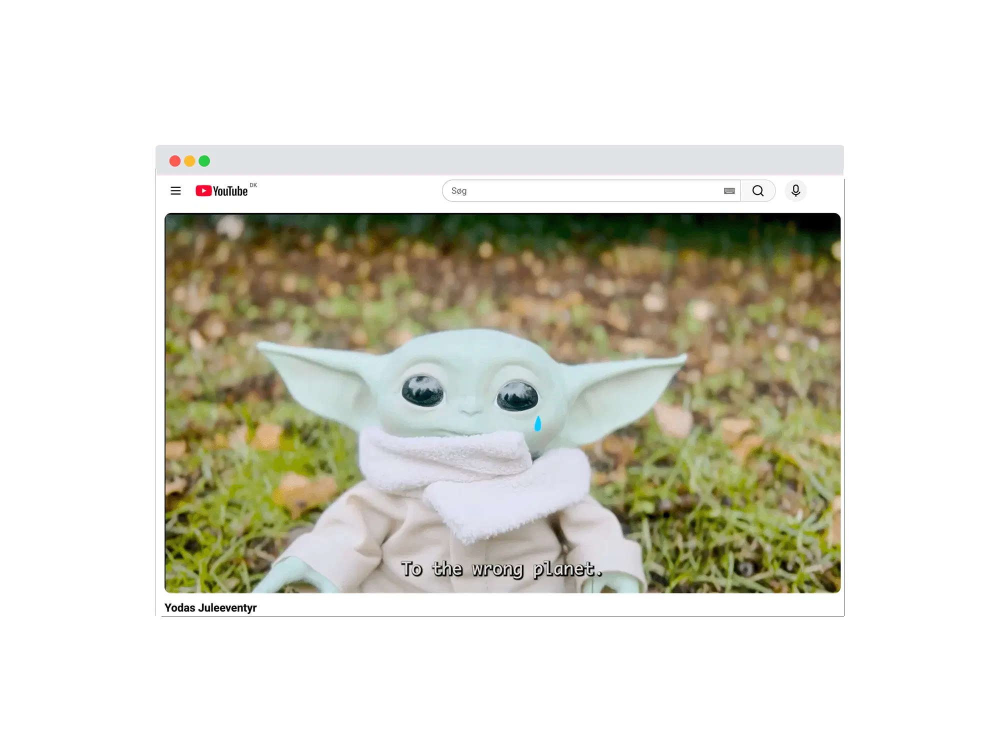
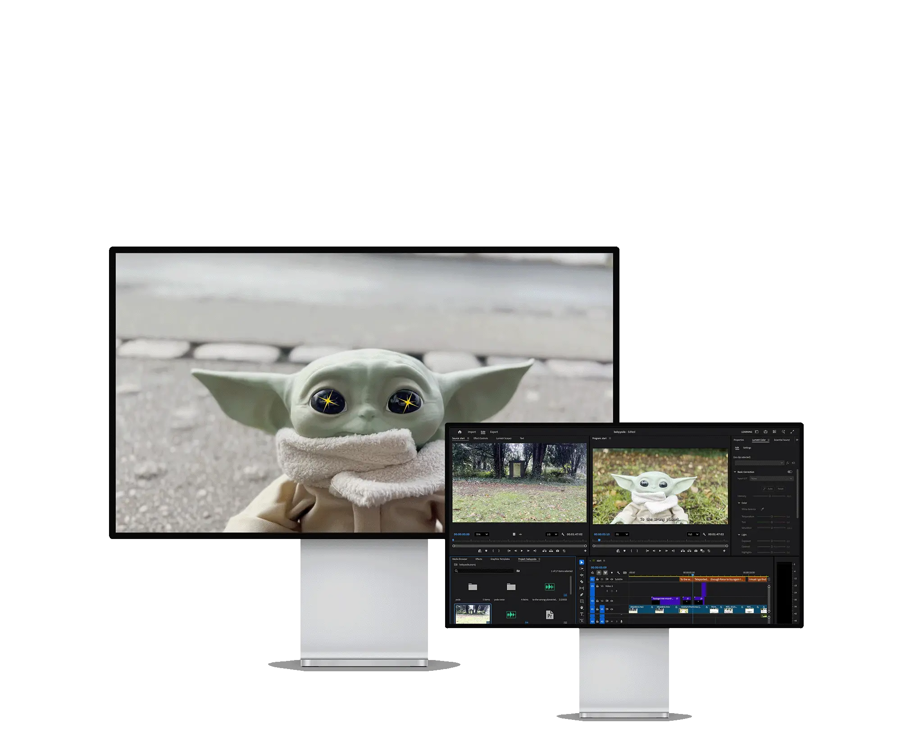
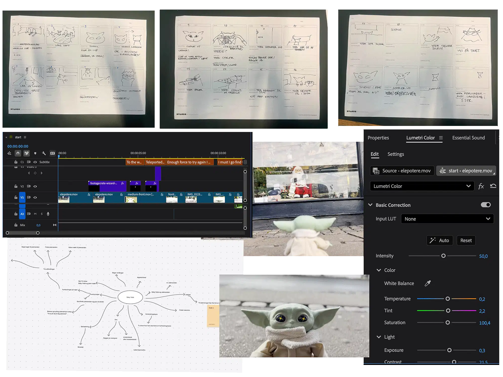
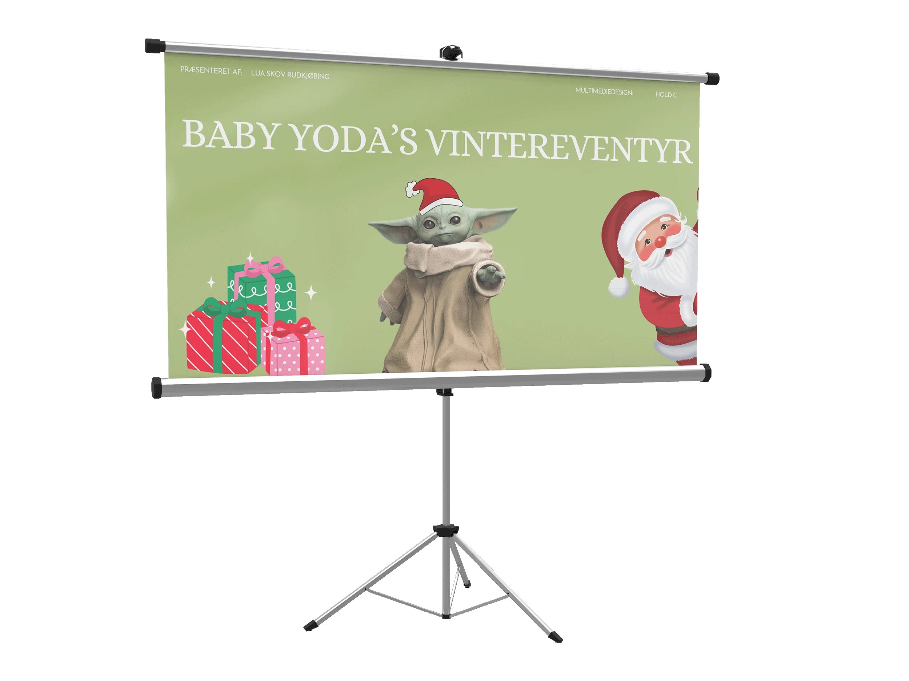

Yoda's Juleeventyr
Se youtube videoen her
Opgave:
Opgaven var at producere en film på ét minut med temaet vintereventyr. Filmen skulle udvikles i samarbejde mellem to personer og klippes i Adobe Premiere Pro.
Løsning:
Vi har lavet en film på ét minut om Baby Yoda på et juleinspireret vintereventyr. Filmen fortæller en enkel historie, hvor fokus er på stemning og fortælling gennem klipning, musik og visuelle elementer.

Proces:
Processen startede med brainstorm og mindmaps ud fra temaet vintereventyr, hvor idéen om en Baby Yoda-bamse som hovedkarakter blev valgt. Derefter udviklede vi et juleinspireret eventyr og udarbejdede et storyboard, hvor handling, optagelser, lyd og kameravinkler blev planlagt. Vi filmede i to dage med en iPhone. Efterfølgende klippede vi filmen i Adobe Premiere Pro og tilføjede gratis VFX, GIF-filer, royalty free lydeffekter, baggrundsmusik og en AI-genereret Yoda-stemme. Til sidst tilføjede vi undertekster for at sikre at man kunne forstå Yodas stemme.
Se proces i Figma her
Feedback og refleksion:
Filmen ramte temaet godt og blev opfattet som hyggelig og sjov, med ros for klipning og brug af special effects. Samtidig viste både processen og feedbacken, at farvereguleringen ikke fungerede helt optimalt, da flere klip var for mættede, og det var svært at justere dem ens, fordi farverne fremstod forskelligt på tværs af skærme. Derudover havde klippene en smule varierende billedkvalitet.
Læring:
Gennem denne opgave har jeg opnået erfaring med grundlæggende brug af Adobe Premiere Pro, herunder arbejde med sekvenser, klipning, overgange og lyd. Jeg har arbejdet med planlægning af video gennem storyboard og fået forståelse for betydningen af kameravinkler, perspektiv og korrekt opsætning ved optagelse med mobilkamera. Derudover har jeg arbejdet med farveregulering og fotostil samt fået indsigt i, hvordan farver kan opleves forskelligt på tværs af enheder. Opgaven har også styrket min forståelse for digitale filformater.
